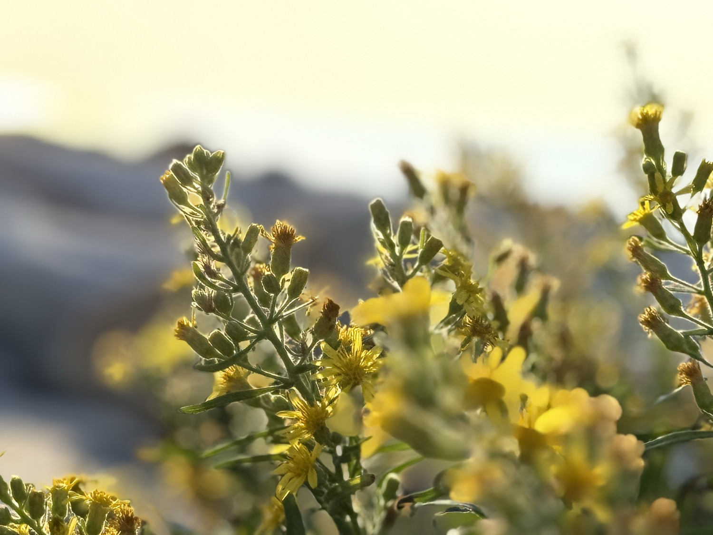
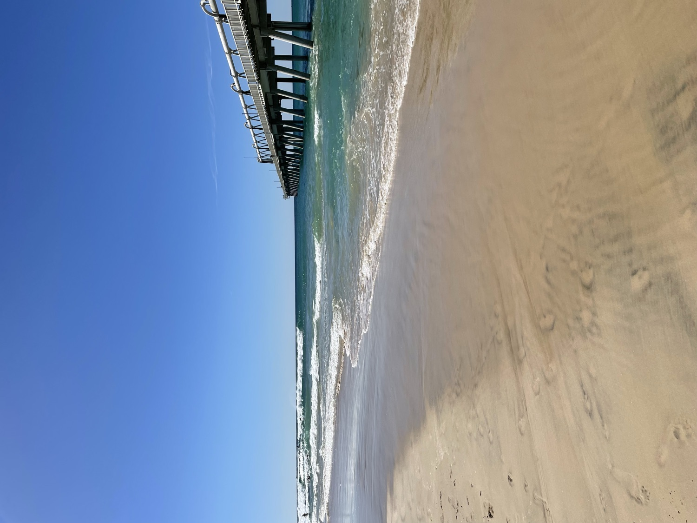
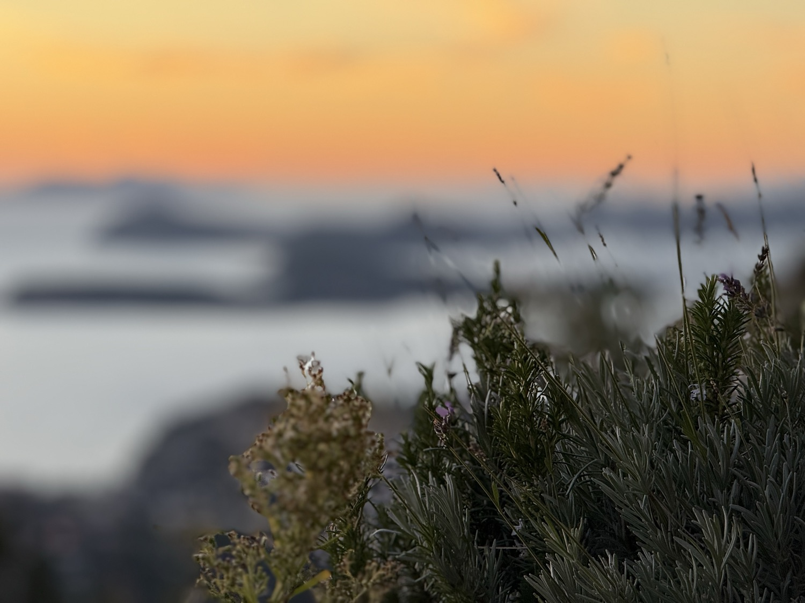
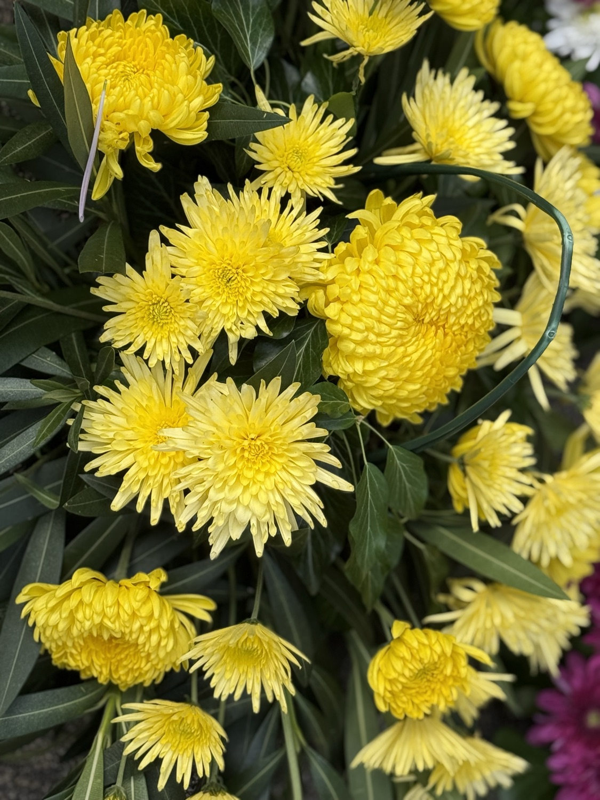
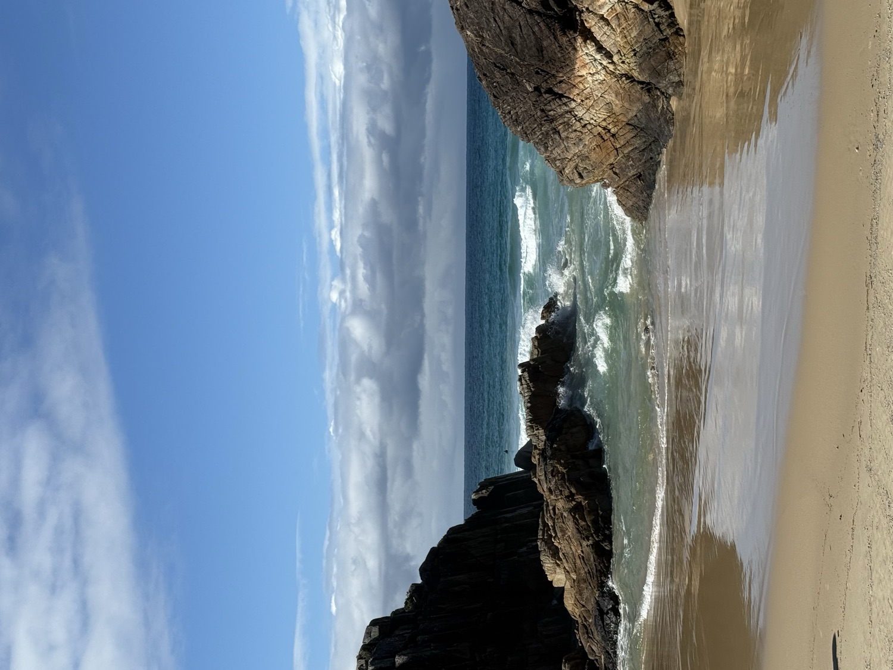
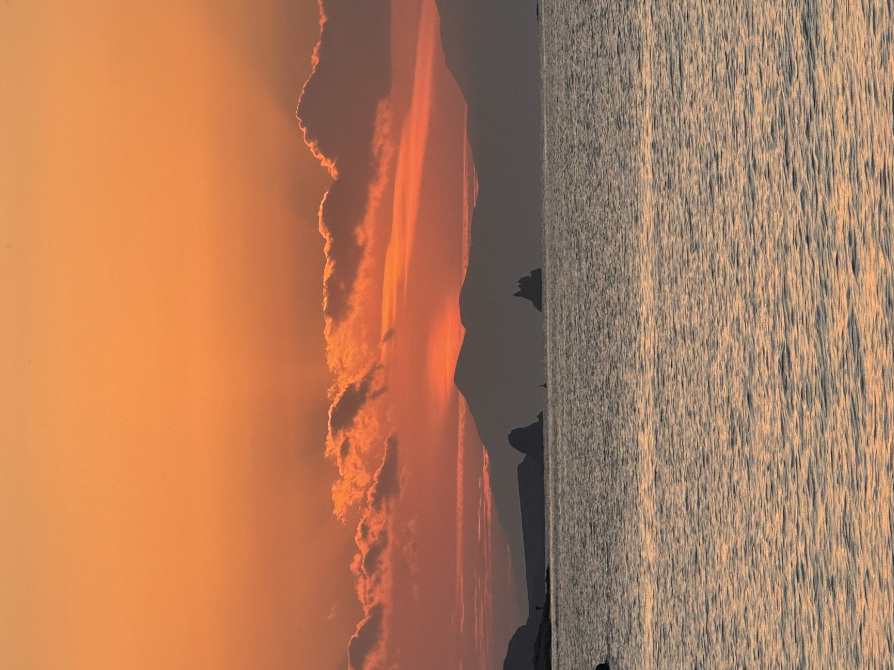
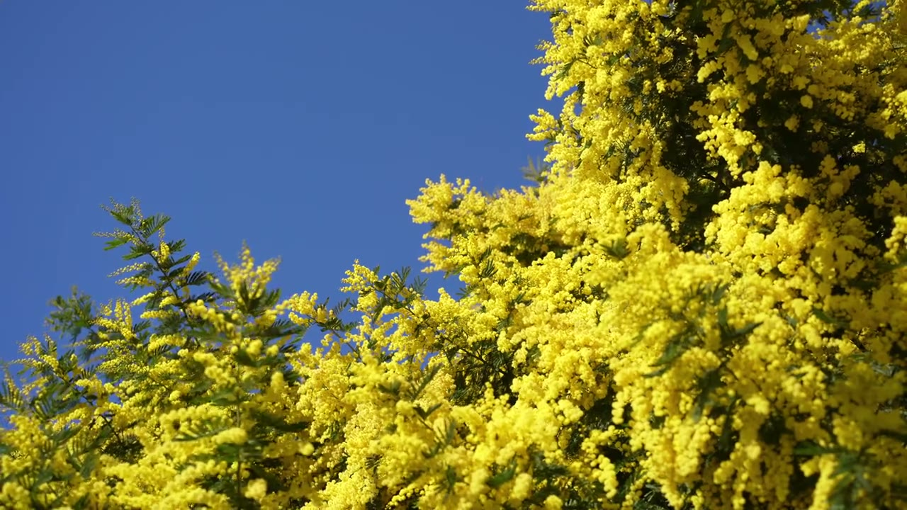
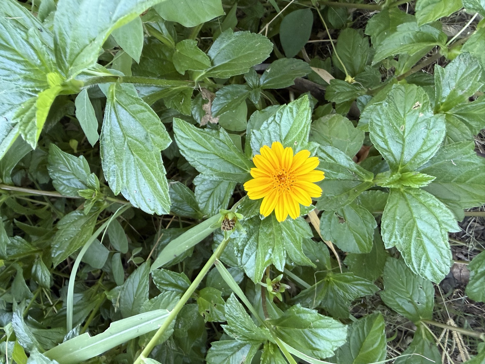
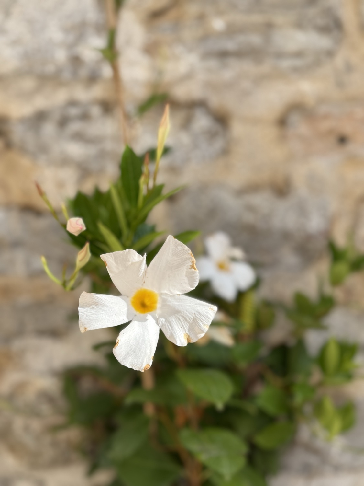

Nature brand board · first look
Bright yellow, sage green, burnt orange and sand beige. The colours on this page come from Jacqui's own nature photos, and every textured background is her own sand or sea sitting behind the colour.
The feeling
These are photos Jacqui took herself. They set the mood for the site: water coming in over sand, warm evening sky, yellow flowers and soft green.







Suggested colours Recommended
Each swatch shows the photo the colour came from. The sand texture behind each one is from Jacqui's beach photo.

From the leaves
From sand and stoneTexture behind the colour
On the left the colour sits flat. On the right the same colour has Jacqui's sand or sea behind it, so it feels like a real surface.
How it could look on the website
Counselling & Coaching · Australia
Come home to yourself.
Book a sessionMeet JacquiAbout Jacqui · Founder
Sand in the background, sage for the small label, burnt orange for the line and the words you want to lift, yellow for the button.
Book a session"You are already the expert on your own life."
How much of each
Three ways to turn the dial